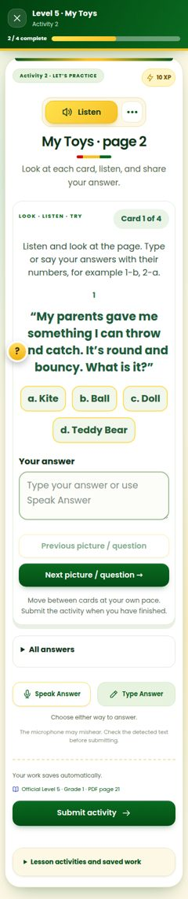
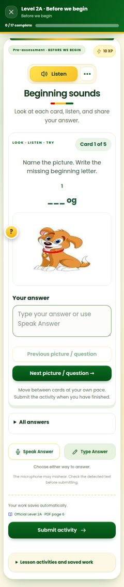
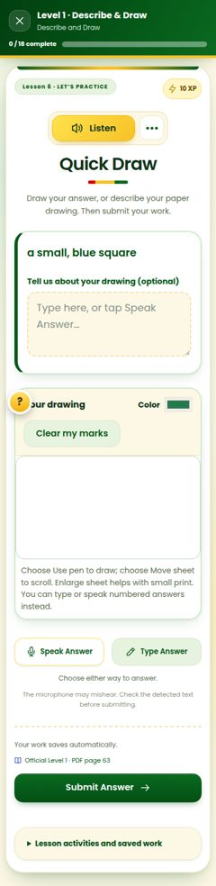
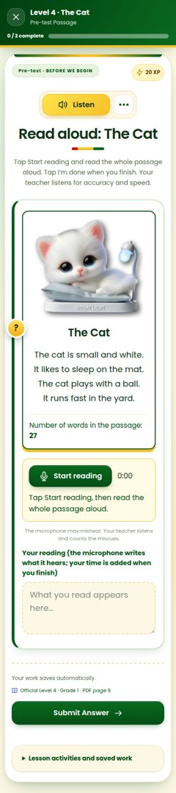

Ideas for the activity screen
I opened each kind of activity a pupil meets on a phone: open answers, picture cards, word building, drawing, act it out, reading aloud and multiple choice. The left side of each idea is a real screenshot of today's screen, shown at full length so you can see how far pupils scroll.
1Everything for the answer in one placeRecommended
- Microphone inside the answer box: tap the box to type, or the red microphone to speak. The separate Speak and Type buttons and the small print go away.
- Numbered card dots: answered cards turn green, so pupils see which ones are still empty and can jump to any card.
- Buttons always at the bottom: Back and Next stay on screen. On the last card, Next turns into a yellow Submit activity.
- Friendly check: if a card is still empty, BULIG asks "Card 3 is still empty. Go back, or submit anyway?"
- Tidier header: a small "Saved ✓" sign replaces "Your work saves automatically", and the progress bar has one piece per activity. The "Official PDF page" link stays for teachers only.

2Letter tiles for missing letters
For cards like "Name the picture. Write the missing beginning letter. ___og", Grade 1 pupils must find letters on a small phone keyboard. Instead, big letter tiles appear and the letter drops into the blank. The normal keyboard is still one tap away (the "abc" key).


3Pictures open big, inside BULIG
Now tapping a picture opens it in a new browser tab, so the pupil leaves the lesson and may not find the way back. Instead, it opens full screen inside BULIG. Pupils can pinch to zoom, swipe to the next picture, and tap × to go back to the question.
Pinch to zoom · swipe for the next picture4A real drawing kit
Now the drawing box is small, with one colour picker and "Clear my marks", which erases everything. Instead, pupils get six crayon colours, three pen sizes, an eraser, an Undo that removes only the last line, and a Full screen button for more room.

5Reading helpers: bigger text and a reading ruler
For reading passages: an Aa button makes the text bigger. A yellow reading ruler highlights one line at a time and moves down as the pupil taps or drags, helping eyes stay on the line. The timer becomes a ring that fills while they read.

The cat is small and white.
It likes to sleep on the mat.
The cat plays with a ball.
It runs fast in the yard.
| Idea | Activities | Size |
|---|---|---|
| 1 Everything for the answer in one place | All answer activities | Medium |
| 2 Letter tiles for missing letters | Cards with blanks (mostly Levels 2A, 2B and 3) | Medium |
| 3 Pictures open big inside BULIG | All activities with pictures | Small |
| 4 A real drawing kit | Drawing activities | Medium |
| 5 Reading helpers | Reading passages (Levels 4, 6 and 7) | Small |